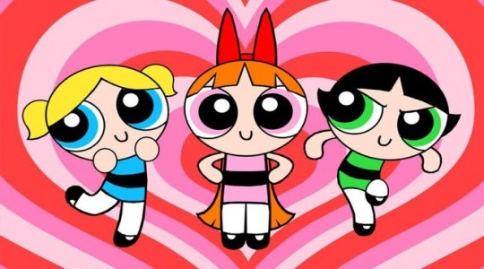

Arthur é um dos desenhos queridos
Arthur é um dos desenhos do anos 2000 que fez parte da infancia de muitas pessoas.


Açúcar, tempero, e tudo o que há de bom (ou, na nova versão, tudo de maneiro). Esses foram os ingredientes escolhidos para criar a garotinha perfeita. Mas o Professor Utônio acidentalmente acrescentou um ingrediente extra na mistura: o Elemento X. E assim nasceram as Meninas Superpoderosas. Usando seus ultra-superpoderes, Lindinha, Florzinha e Docinho têm dedicado suas vidas a combater o crime, as forças do mal, e os padrões de gênero socialmente estabelecidos.